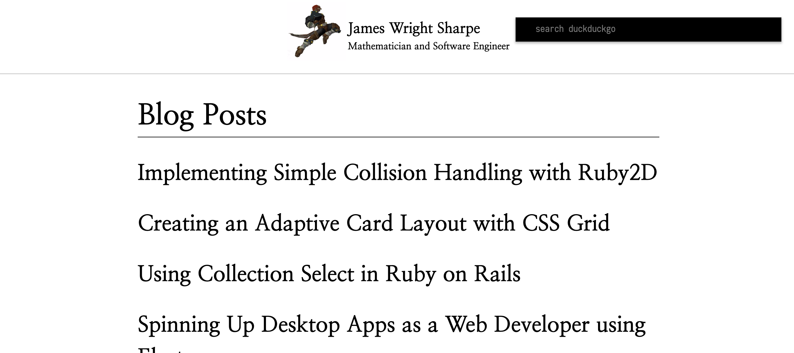

TLDR;
//manifest.json
{
"manifest_version": 2
"name": "DDG Search Bar",
"version": "1.0.0",
"permissions": ["tabs", "http://*/*", "https://*/*"],
"browser_action": {
"default_popup": "launcher/launcher.html"
},
}
One of my favorite facets of being a developer has been the control I can find and exploit throughout all of my favorite softwares. Chrome has particularly powerful customization options available to the users by allowing them to import and share js scripts to each other in a component-based solution known as chrome extensions.
The way that chrome interacts with these scripts is by loading them into memory along with a .json file that gives the extension it's meta-data and permissions.
So in order to create a pop-up search bar we must separate the steps and tackle them. We will first go through creating a manifest file, then head into the basic html/css we will need, finally we will create the meat of the javascript.
Chrome's manifest files can be found specifically here. The only required piece of code we need to be a valid extension is:
//manifest.json
{
// Required
"manifest_version": 2,
"name": "My Extension",
"version": "versionString",
}
However, in this case we will want to be able to click on the icon and make a searchbar appear. We will also need to send it permissions to be able to send html requests and open up tabs on chrome. Chrome gives us these options as permissions and actions which we must define in the manifest.
//Our more complete manifest.json
{
"name": "DDG Search Bar",
"version": "1.0.0",
//This tells the extension what permission we want to allow.
"permissions": ["tabs", "http://*/*", "https://*/*"],
"browser_action": {
//This tells the extension where to look for the HTML file we want to launch.
"default_popup": "launcher/launcher.html"
},
"manifest_version": 2
}
More of these permissions and actions can be found on their website.
The launcher.html file will give us what to display on the
screen, combined with a little CSS we can create a search bar that will
appear on our screen.
<html>
<link rel="stylesheet" href="launcher.css" />
<script src="launcher.js"></script>
<body>
<input type="text" id="launcher" placeholder="search duckduckgo" />
</body>
</html>

I will avoid the CSS for the sake of screen brevity.
What is important here is that none of it looks out of place from regular HTML. We can now run through the javascript in order to get to the fun.
We want our javascript to handle three things, user experience when it opens, forming URL on a submit request, and finally sending the URL request to chrome as a duckduckgo query.
Firstly we can call focus to the extension by selecting it and giving it focus. Luckily javascript makes this very easy on us.
document.addEventListener("DOMContentLoaded", () => {
const launcher = document.getElementById("launcher");
launcher.focus();
launcher.select();
});
Next we want on 'enter' to form a url. In this case since I am using DuckDuckGo I can go and take their query submission url return it from a function.
function createURL() {
const url = document.getElementById("launcher").value;
const ddg = "http://www.duckduckgo.com/?q=";
return ddg + url;
}
Finally we can leverage the chrome api and create a new tab going to the url. I will throw this into the event listener and will call the chrome api on a keypress of enter.
document.addEventListener('keydown', e => {
const key = e.keyCode;
if (key === 13) {
const url = createURL();
//This will create a new tab with the submitted url.
chrome.tabs.create({
url: url
});
}
});
Luckily, chrome makes this as easy to install as it was to write. If you
navigate to the url chrome://extensions. We click on load
unpacked and navigate to the project folder. After loading it in it is
ready to go.